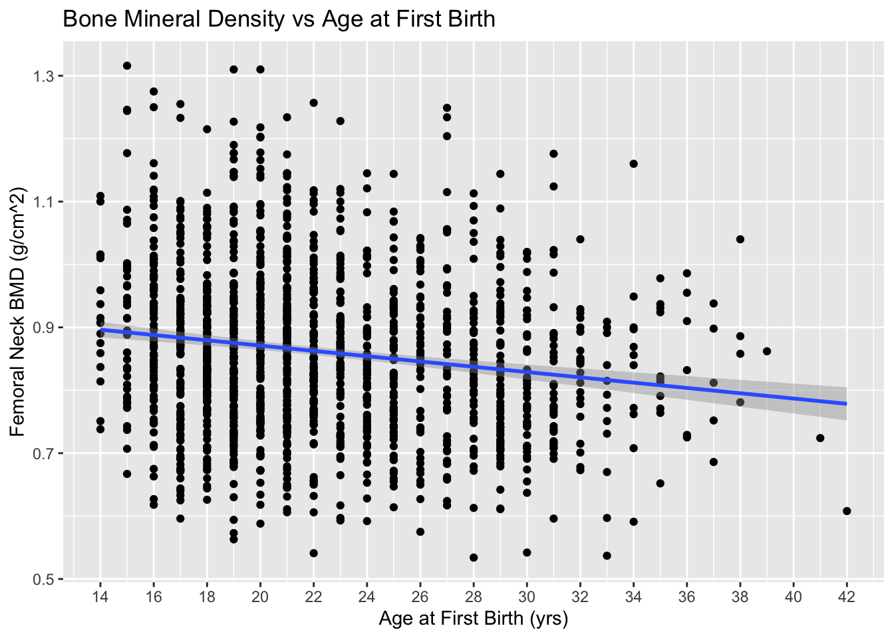
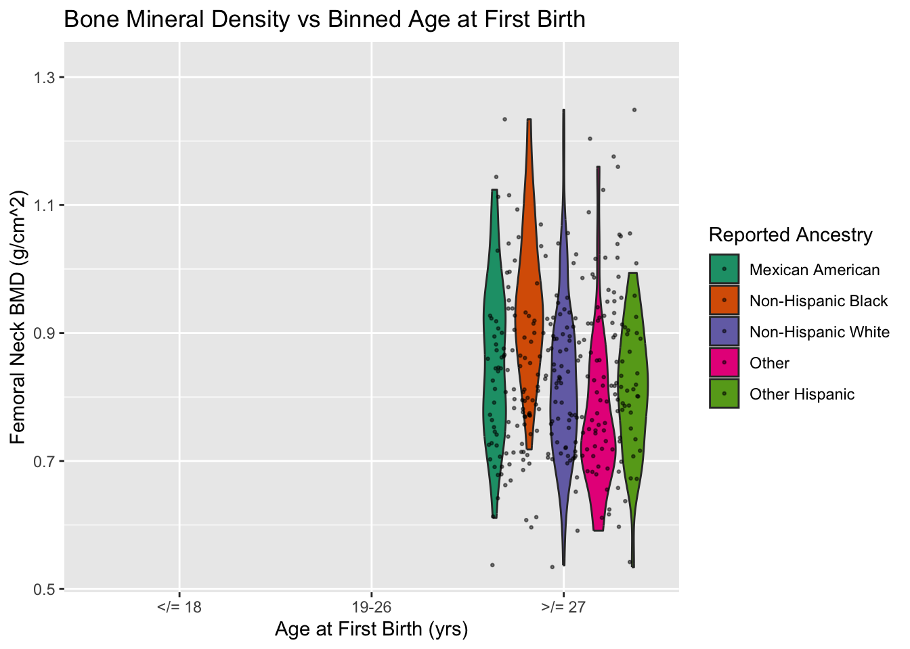
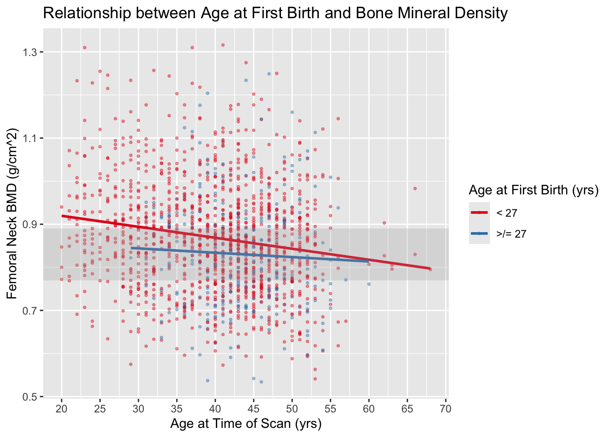
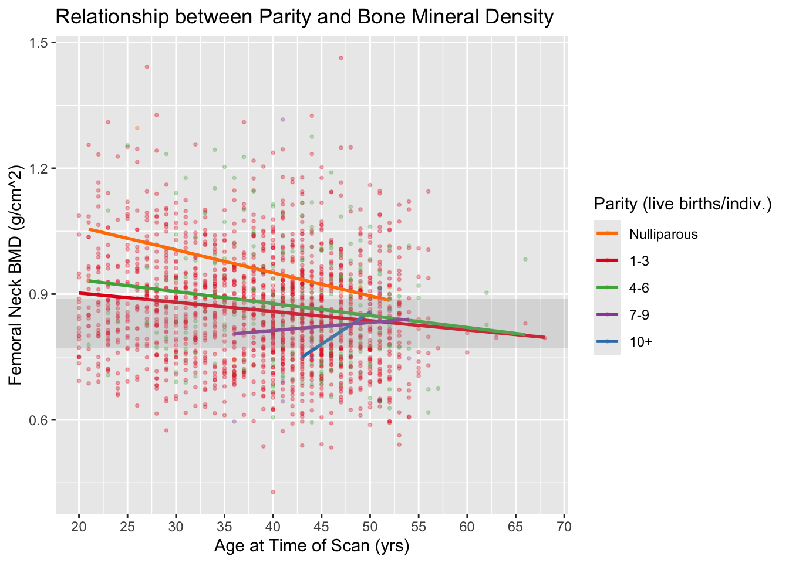
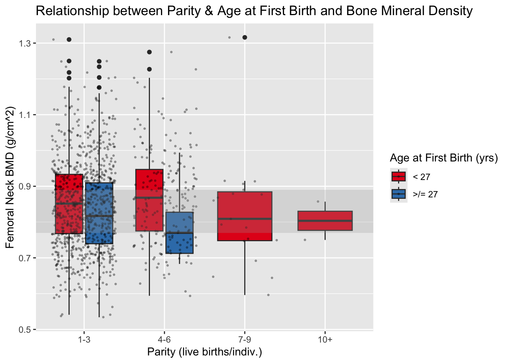

analysis
Calli Quire
2025-02-14
Last updated: 2025-03-11
Checks: 7 0
Knit directory: afb_plo_aaba_2025/
This reproducible R Markdown analysis was created with workflowr (version 1.7.1). The Checks tab describes the reproducibility checks that were applied when the results were created. The Past versions tab lists the development history.
Great! Since the R Markdown file has been committed to the Git repository, you know the exact version of the code that produced these results.
Great job! The global environment was empty. Objects defined in the global environment can affect the analysis in your R Markdown file in unknown ways. For reproduciblity it’s best to always run the code in an empty environment.
The command set.seed(20250126) was run prior to running
the code in the R Markdown file. Setting a seed ensures that any results
that rely on randomness, e.g. subsampling or permutations, are
reproducible.
Great job! Recording the operating system, R version, and package versions is critical for reproducibility.
Nice! There were no cached chunks for this analysis, so you can be confident that you successfully produced the results during this run.
Great job! Using relative paths to the files within your workflowr project makes it easier to run your code on other machines.
Great! You are using Git for version control. Tracking code development and connecting the code version to the results is critical for reproducibility.
The results in this page were generated with repository version 3853d4d. See the Past versions tab to see a history of the changes made to the R Markdown and HTML files.
Note that you need to be careful to ensure that all relevant files for
the analysis have been committed to Git prior to generating the results
(you can use wflow_publish or
wflow_git_commit). workflowr only checks the R Markdown
file, but you know if there are other scripts or data files that it
depends on. Below is the status of the Git repository when the results
were generated:
Ignored files:
Ignored: .DS_Store
Ignored: .RData
Ignored: .Rhistory
Ignored: .Rproj.user/
Note that any generated files, e.g. HTML, png, CSS, etc., are not included in this status report because it is ok for generated content to have uncommitted changes.
These are the previous versions of the repository in which changes were
made to the R Markdown (analysis/analysis.Rmd) and HTML
(docs/analysis.html) files. If you’ve configured a remote
Git repository (see ?wflow_git_remote), click on the
hyperlinks in the table below to view the files as they were in that
past version.
| File | Version | Author | Date | Message |
|---|---|---|---|---|
| Rmd | 3853d4d | Calli Quire | 2025-03-11 | wflow_publish("analysis/analysis.Rmd") |
| html | 5deec84 | Calli Quire | 2025-03-11 | Build site. |
| Rmd | 35f5222 | Calli Quire | 2025-03-11 | wflow_publish("analysis/analysis.Rmd") |
| Rmd | 54d8d3b | Calli Quire | 2025-03-11 | plot chaos |
| Rmd | 1cd205a | Calli Quire | 2025-03-11 | Update analysis.Rmd |
| Rmd | 4a657aa | Calli Quire | 2025-03-11 | Update analysis.Rmd |
| html | e8c3feb | Calli Quire | 2025-03-11 | Build site. |
| Rmd | d1ccdf7 | Calli Quire | 2025-03-11 | wflow_publish("analysis/analysis.Rmd") |
| html | 0877df1 | Calli Quire | 2025-03-11 | Build site. |
| html | 63e0804 | Calli Quire | 2025-03-09 | Build site. |
| Rmd | 122bfed | Calli Quire | 2025-03-09 | Update analysis.Rmd |
| Rmd | f906818 | Calli Quire | 2025-03-09 | Update analysis.Rmd |
| Rmd | eb9f7a2 | Calli Quire | 2025-03-09 | Update analysis.Rmd |
| Rmd | c40c945 | Calli Quire | 2025-03-09 | Update analysis.Rmd |
| Rmd | b115905 | Calli Quire | 2025-03-09 | Update analysis.Rmd |
| html | be9c1fa | Calli Quire | 2025-03-04 | Build site. |
| Rmd | 97fba78 | Calli Quire | 2025-03-04 | wflow_publish("analysis/analysis.Rmd") |
| html | d2b9a14 | Calli Quire | 2025-03-04 | Build site. |
| Rmd | 30d8611 | Calli Quire | 2025-03-04 | wflow_publish("analysis/analysis.Rmd") |
| Rmd | 522c77f | Calli Quire | 2025-03-04 | Update analysis.Rmd |
| Rmd | 12568ab | Calli Quire | 2025-03-04 | Update analysis.Rmd |
| html | 6549975 | Calli Quire | 2025-03-04 | Build site. |
| Rmd | c7a4d5a | Calli Quire | 2025-03-03 | updating analyses |
| Rmd | e29eeff | Calli Quire | 2025-03-03 | updating packages |
| Rmd | f7be61f | Calli Quire | 2025-03-03 | Update analysis.Rmd |
| Rmd | fbcf414 | Calli Quire | 2025-03-03 | Update analysis.Rmd |
| Rmd | d420bac | Calli Quire | 2025-02-26 | Update analysis.Rmd |
| Rmd | 11378dc | Calli Quire | 2025-02-26 | Update analysis.Rmd |
| html | 984b91b | Calli Quire | 2025-02-24 | Build site. |
| Rmd | 73291b3 | Calli Quire | 2025-02-24 | Update analysis.Rmd |
| html | bad62cb | Calli Quire | 2025-02-24 | Build site. |
| Rmd | fcd160f | Calli Quire | 2025-02-24 | wflow_publish("analysis/analysis.Rmd") |
| html | fdb6d03 | Calli Quire | 2025-02-24 | Build site. |
| Rmd | 23ff826 | Calli Quire | 2025-02-24 | wflow_publish("analysis/analysis.Rmd") |
| html | 093cf43 | Calli Quire | 2025-02-24 | Build site. |
| Rmd | d2140ff | Calli Quire | 2025-02-24 | wflow_publish("analysis/analysis.Rmd") |
| html | a645a15 | Calli Quire | 2025-02-24 | Build site. |
| Rmd | 9ba5a9c | Calli Quire | 2025-02-24 | Update analysis.Rmd |
| Rmd | ca1b925 | Calli Quire | 2025-02-24 | Update analysis.Rmd |
| Rmd | 5617a3d | Calli Quire | 2025-02-23 | Update analysis.Rmd |
| Rmd | c03ba46 | Calli Quire | 2025-02-23 | Update analysis.Rmd |
| Rmd | 247d85b | Calli Quire | 2025-02-23 | Update analysis.Rmd |
| Rmd | 30bddd1 | Calli Quire | 2025-02-23 | Update analysis.Rmd |
| Rmd | 91ac1ad | Calli Quire | 2025-02-23 | Update analysis.Rmd |
| html | 5bf327e | Calli Quire | 2025-02-21 | Build site. |
| Rmd | b0051af | Calli Quire | 2025-02-21 | wflow_publish("analysis/analysis.Rmd") |
| Rmd | 5962afe | Calli Quire | 2025-02-21 | Update analysis.Rmd |
| Rmd | 67f60ea | Calli Quire | 2025-02-21 | Update analysis.Rmd |
| Rmd | 05e6ec4 | Calli Quire | 2025-02-21 | Update analysis.Rmd |
| Rmd | 9e61e22 | Calli Quire | 2025-02-21 | Update analysis.Rmd |
| html | 78c39e1 | Calli Quire | 2025-02-20 | Build site. |
| Rmd | 62367f7 | Calli Quire | 2025-02-20 | wflow_publish("analysis/analysis.Rmd") |
| html | f2b8dd1 | Calli Quire | 2025-02-20 | Build site. |
| Rmd | 48bb3d9 | Calli Quire | 2025-02-20 | Update analysis.Rmd |
| Rmd | 3c64e09 | Calli Quire | 2025-02-20 | Update analysis.Rmd |
| Rmd | fb7f3d8 | Calli Quire | 2025-02-20 | Update analysis.Rmd |
| Rmd | 7df80b1 | Calli Quire | 2025-02-20 | Update analysis.Rmd |
| Rmd | 10e43f8 | Calli Quire | 2025-02-20 | Update analysis.Rmd |
| Rmd | 9d59cf6 | Calli Quire | 2025-02-17 | Update analysis.Rmd |
| html | 9034257 | Calli Quire | 2025-02-15 | Build site. |
| Rmd | ad870a6 | Calli Quire | 2025-02-15 | summary |
| html | 22bcb25 | Calli Quire | 2025-02-15 | Build site. |
| Rmd | db6c7d9 | Calli Quire | 2025-02-15 | Update analysis.Rmd |
| Rmd | bab9267 | Calli Quire | 2025-02-15 | Update analysis.Rmd |
| Rmd | c8aac9a | Calli Quire | 2025-02-15 | Update analysis.Rmd |
| Rmd | 6fb047a | Calli Quire | 2025-02-15 | update analysis.Rmd |
| html | 1751f9e | Calli Quire | 2025-02-14 | Build site. |
| Rmd | bd50627 | Calli Quire | 2025-02-14 | wflow_publish("analysis/*.Rmd") |
| Rmd | d629939 | Calli Quire | 2025-02-14 | re ran what I just added |
| Rmd | 069404e | Calli Quire | 2025-02-14 | more actual analysis |
Set up
Download, install, run relevant packages
The downloaded binary packages are in
/var/folders/ps/8glpgwws46q79hzcgj61tlsr0000gn/T//Rtmp2PZTHI/downloaded_packages
The downloaded binary packages are in
/var/folders/ps/8glpgwws46q79hzcgj61tlsr0000gn/T//Rtmp2PZTHI/downloaded_packages
The downloaded binary packages are in
/var/folders/ps/8glpgwws46q79hzcgj61tlsr0000gn/T//Rtmp2PZTHI/downloaded_packages
The downloaded binary packages are in
/var/folders/ps/8glpgwws46q79hzcgj61tlsr0000gn/T//Rtmp2PZTHI/downloaded_packages
The downloaded binary packages are in
/var/folders/ps/8glpgwws46q79hzcgj61tlsr0000gn/T//Rtmp2PZTHI/downloaded_packages
The downloaded binary packages are in
/var/folders/ps/8glpgwws46q79hzcgj61tlsr0000gn/T//Rtmp2PZTHI/downloaded_packages
The downloaded binary packages are in
/var/folders/ps/8glpgwws46q79hzcgj61tlsr0000gn/T//Rtmp2PZTHI/downloaded_packages
The downloaded binary packages are in
/var/folders/ps/8glpgwws46q79hzcgj61tlsr0000gn/T//Rtmp2PZTHI/downloaded_packages
The downloaded binary packages are in
/var/folders/ps/8glpgwws46q79hzcgj61tlsr0000gn/T//Rtmp2PZTHI/downloaded_packages
The downloaded binary packages are in
/var/folders/ps/8glpgwws46q79hzcgj61tlsr0000gn/T//Rtmp2PZTHI/downloaded_packages
The downloaded binary packages are in
/var/folders/ps/8glpgwws46q79hzcgj61tlsr0000gn/T//Rtmp2PZTHI/downloaded_packages
The downloaded binary packages are in
/var/folders/ps/8glpgwws46q79hzcgj61tlsr0000gn/T//Rtmp2PZTHI/downloaded_packages
The downloaded binary packages are in
/var/folders/ps/8glpgwws46q79hzcgj61tlsr0000gn/T//Rtmp2PZTHI/downloaded_packages
The downloaded binary packages are in
/var/folders/ps/8glpgwws46q79hzcgj61tlsr0000gn/T//Rtmp2PZTHI/downloaded_packages
The downloaded binary packages are in
/var/folders/ps/8glpgwws46q79hzcgj61tlsr0000gn/T//Rtmp2PZTHI/downloaded_packages
The downloaded binary packages are in
/var/folders/ps/8glpgwws46q79hzcgj61tlsr0000gn/T//Rtmp2PZTHI/downloaded_packages
The downloaded binary packages are in
/var/folders/ps/8glpgwws46q79hzcgj61tlsr0000gn/T//Rtmp2PZTHI/downloaded_packages
The downloaded binary packages are in
/var/folders/ps/8glpgwws46q79hzcgj61tlsr0000gn/T//Rtmp2PZTHI/downloaded_packages
The downloaded binary packages are in
/var/folders/ps/8glpgwws46q79hzcgj61tlsr0000gn/T//Rtmp2PZTHI/downloaded_packages
Attaching package: 'dplyr'The following objects are masked from 'package:stats':
filter, lagThe following objects are masked from 'package:base':
intersect, setdiff, setequal, unionLoading required package: gridLoading required package: MatrixLoading required package: survival
Attaching package: 'survey'The following object is masked from 'package:graphics':
dotchart
Attaching package: 'tidyr'The following objects are masked from 'package:Matrix':
expand, pack, unpack── Attaching core tidyverse packages ──────────────────────── tidyverse 2.0.0 ──
✔ forcats 1.0.0 ✔ readr 2.1.5
✔ lubridate 1.9.4 ✔ stringr 1.5.1
✔ purrr 1.0.2 ✔ tibble 3.2.1
── Conflicts ────────────────────────────────────────── tidyverse_conflicts() ──
✖ tidyr::expand() masks Matrix::expand()
✖ dplyr::filter() masks stats::filter()
✖ dplyr::lag() masks stats::lag()
✖ tidyr::pack() masks Matrix::pack()
✖ tidyr::unpack() masks Matrix::unpack()
ℹ Use the conflicted package (<http://conflicted.r-lib.org/>) to force all conflicts to become errors
Loading required package: viridisLite
Attaching package: 'nlme'
The following object is masked from 'package:dplyr':
collapse
Attaching package: 'lme4'
The following object is masked from 'package:nlme':
lmList
Registered S3 method overwritten by 'quantmod':
method from
as.zoo.data.frame zoo
Attaching package: 'cowplot'
The following object is masked from 'package:lubridate':
stamp
Attaching package: 'sjPlot'
The following objects are masked from 'package:cowplot':
plot_grid, save_plot
Attaching package: 'sjmisc'
The following object is masked from 'package:purrr':
is_empty
The following object is masked from 'package:tibble':
add_case
The following object is masked from 'package:tidyr':
replace_na
Loading required package: carData
lattice theme set by effectsTheme()
See ?effectsTheme for details.
Attaching package: 'sjstats'
The following object is masked from 'package:survey':
cv
Attaching package: 'AICcmodavg'
The following object is masked from 'package:lme4':
checkConvR package versions:base : 4.4.2
survey : 4.4.2
dplyr : 1.1.4 Import data
Download and read data
1. Demographic data
## Demographic (DEMO) data
## isolate participant identification/sequence number, gender, age, variances, race/Hispanic origin
# 2007-2008
download.file("https://wwwn.cdc.gov/Nchs/Data/Nhanes/Public/2007/DataFiles/DEMO_E.XPT", tf <- tempfile(), mode="wb")
DEMO_E <- foreign::read.xport(tf)[,c("SEQN","RIAGENDR","RIDAGEYR","SDMVSTRA","SDMVPSU","WTMEC2YR", "RIDRETH1")]
# 2009-2010
download.file("https://wwwn.cdc.gov/Nchs/Data/Nhanes/Public/2009/DataFiles/DEMO_F.xpt", tf <- tempfile(), mode="wb")
DEMO_F <- foreign::read.xport(tf)[,c("SEQN","RIAGENDR","RIDAGEYR","SDMVSTRA","SDMVPSU","WTMEC2YR", "RIDRETH1")]
# 2013-2014
download.file("https://wwwn.cdc.gov/Nchs/Data/Nhanes/Public/2013/DataFiles/DEMO_H.XPT", tf <- tempfile(), mode="wb")
DEMO_H <- foreign::read.xport(tf)[,c("SEQN","RIAGENDR","RIDAGEYR","SDMVSTRA","SDMVPSU","WTMEC2YR", "RIDRETH1")]
# 2017-2018
download.file("https://wwwn.cdc.gov/Nchs/Data/Nhanes/Public/2017/DataFiles/DEMO_J.XPT", tf <- tempfile(), mode="wb")
DEMO_J <- foreign::read.xport(tf)[,c("SEQN","RIAGENDR","RIDAGEYR","SDMVSTRA","SDMVPSU","WTMEC2YR", "RIDRETH1")]2. Reproductive health question (RHQ) data
# Reproductive Health Questions (RHQ)
# isolate sequence number, age at first live birth, has had regular periods in the last 12 mo, reason for not having regular periods in last 12 mo
# 2007-2008
download.file("https://wwwn.cdc.gov/Nchs/Data/Nhanes/Public/2007/DataFiles/RHQ_E.XPT", tf <- tempfile(), mode="wb")
RHQ_E <- foreign::read.xport(tf)[,c("SEQN","RHD180", "RHQ031", "RHD042", "RHQ171")]
# 2009-2010
download.file("https://wwwn.cdc.gov/Nchs/Data/Nhanes/Public/2009/DataFiles/RHQ_F.xpt", tf <- tempfile(), mode="wb")
RHQ_F <- foreign::read.xport(tf)[,c("SEQN","RHD180", "RHQ031", "RHD042", "RHQ171")]
# 2013-2014
download.file("https://wwwn.cdc.gov/Nchs/Data/Nhanes/Public/2013/DataFiles/RHQ_H.xpt", tf <- tempfile(), mode="wb")
RHQ_H <- foreign::read.xport(tf)[,c("SEQN","RHD180", "RHQ031", "RHD043", "RHQ171")]
# 2017-2018
download.file("https://wwwn.cdc.gov/Nchs/Data/Nhanes/Public/2017/DataFiles/RHQ_J.xpt", tf <- tempfile(), mode="wb")
RHQ_J <- foreign::read.xport(tf)[,c("SEQN","RHD180", "RHQ031", "RHD043", "RHQ171")]3. Bone mineral denisty (BMD) data
# Dual-Energy X-Ray Absorptiometry - Total Femur
# isolate sequence number, total femoral BMD
# 2007-2008
download.file("https://wwwn.cdc.gov/Nchs/Data/Nhanes/Public/2007/DataFiles/DXXFEM_E.xpt", tf <- tempfile(), mode="wb")
DXX_E <- foreign::read.xport(tf)[,c("SEQN", "DXXNKBMD")]
# 2009-2010
download.file("https://wwwn.cdc.gov/Nchs/Data/Nhanes/Public/2009/DataFiles/DXXFEM_F.xpt", tf <- tempfile(), mode="wb")
DXX_F <- foreign::read.xport(tf)[,c("SEQN", "DXXNKBMD")]
# 2013-2014
download.file("https://wwwn.cdc.gov/Nchs/Data/Nhanes/Public/2013/DataFiles/DXXFEM_H.xpt", tf <- tempfile(), mode="wb")
DXX_H <- foreign::read.xport(tf)[,c("SEQN", "DXXNKBMD")]
# 2017-2018
download.file("https://wwwn.cdc.gov/Nchs/Data/Nhanes/Public/2017/DataFiles/DXXFEM_J.xpt", tf <- tempfile(), mode="wb")
DXX_J <- foreign::read.xport(tf)[,c("SEQN", "DXXNKBMD")]Clean
Combine the data sets
# combine data sets for DEMO, RHQ, and DXX into three sub-sets
DEMO <- bind_rows(DEMO_E, DEMO_F, DEMO_H, DEMO_J)
RHQ <- bind_rows(RHQ_E, RHQ_F, RHQ_H, RHQ_J)
DXX <- bind_rows(DXX_E, DXX_F, DXX_H, DXX_J)Merge subsets into one main data set
# merge DEMO + RHQ
predata <- left_join(DEMO, RHQ, by = "SEQN")
# merge 'predata' = DEMO, RHQ, + DXX
data <- left_join(predata, DXX, by = "SEQN")Combine any single variables with 2+ codes into single columns
# combine any variables that have two different variable names (e.g., RHD042 = RHD043) into single columns
# combine RHD042, RHD043
data$RHQ04X <- coalesce(data$RHD042, data$RHD043)Simplify variable/column names
data <-
rename(data,
BMD = DXXNKBMD, AFB = RHD180, MENS = RHQ031,
GENDR = RIAGENDR, AGE = RIDAGEYR, RETH = RIDRETH1, NMENS = RHQ04X, PAR = RHQ171
)Omit males from data
# remove male study participants from analysis data; responses to RIAGENDR coded 1
data <- subset(data, !(GENDR %in% c(1)))Omit any participants without BMD (DXXBMD), AFB (RHX180), period/year (RHQ03X) data
# missing BMD data
data <- drop_na(data, "BMD")
# missing AFB data
data <- drop_na(data, "AFB")
# missing period/year data
data <- drop_na(data, "MENS")
# missing parity data
data <- drop_na(data, "PAR")Omit any participants who answered “don’t know” (coded 999), or “refused” (coded as 777) to AFB
data <- subset(data, !(AFB %in% c(777, 999)))Omit any participants who answered “don’t know” (coded 9), or “refused” (coded as 7) to RHQ03X (Period in last 12 mo?)
# removes participants who don't know if they have had a period in the last 12 months
data <- subset(data, !(MENS %in% c(7, 9)))Omit any participants who answered 5-9, 77, 99 to RHQ04X (Why no period/year?)
# removes participants who aren't having periods b/c: hysterectomy (coded 3), periods usually irregular (coded 4), going/gone through menopause (coded 5 or 7), medical conditions/treatments (coded 6 or 8), other (coded 9), refused (coded 77), don't know (coded 99)
# there are multiple codes for some conditions due to coding inconsistencies between sampling years
# excludes data on individuals who may not be in 'good health'-- defined 'good health' in exclusion flowchart
data <- subset(data, !(NMENS %in% c(3, 4, 5, 6, 7, 8, 9, 77, 99)))Omit any participants who answered refused or don’t know to parity
data <- subset(data, !(PAR %in% c(77, 99)))Add column for AFB b4 18, from 18-27, from 28+
# adds column called BINS where the following is coded:
data <- data %>%
mutate(BINS = case_when(
AFB < 27 ~ "< 27",
AFB > 26 ~ ">/= 27",
))Replace race/ethnicity codes with ‘definitions’
data <- data %>% mutate(RETH = recode(RETH, '1' = 'Mexican American', '2' = 'Other Hispanic', '3' = 'Non-Hispanic White', '4' = 'Non-Hispanic Black', '5' = 'Other'))
# STILL NEED TO COLLAPSE 'OTHER' CATEGORIES INTO ONECreate simplified data frames for analyses
# drop all columns that are not the combined columns, age, gender, race/origin or sequence number
# makes simplified data frame (named "df") for analyses purposes
# does not delete the full data frame (named "data")
df <- subset(data, select = -c(SDMVSTRA, SDMVPSU, WTMEC2YR, RHD042, RHD043))Analysis
Without parity
Exploratory analysis
# simple multivariate regression
lm1 <- lm(BMD ~ AFB + AGE, data = df)
summary(lm1)
Call:
lm(formula = BMD ~ AFB + AGE, data = df)
Residuals:
Min 1Q Median 3Q Max
-0.29846 -0.08886 -0.00674 0.07674 0.43180
Coefficients:
Estimate Std. Error t value Pr(>|t|)
(Intercept) 1.0221443 0.0194214 52.630 < 2e-16 ***
AFB -0.0033213 0.0006714 -4.947 8.40e-07 ***
AGE -0.0021495 0.0004044 -5.315 1.22e-07 ***
---
Signif. codes: 0 '***' 0.001 '**' 0.01 '*' 0.05 '.' 0.1 ' ' 1
Residual standard error: 0.1263 on 1507 degrees of freedom
Multiple R-squared: 0.04448, Adjusted R-squared: 0.04321
F-statistic: 35.07 on 2 and 1507 DF, p-value: 1.291e-15# added other potential variables
lm2 <- lm(BMD ~ AFB + AGE + RETH, data = df)
summary(lm2)
Call:
lm(formula = BMD ~ AFB + AGE + RETH, data = df)
Residuals:
Min 1Q Median 3Q Max
-0.32565 -0.08357 -0.00517 0.07804 0.45707
Coefficients:
Estimate Std. Error t value Pr(>|t|)
(Intercept) 0.9817578 0.0195173 50.302 < 2e-16 ***
AFB -0.0016086 0.0006774 -2.375 0.0177 *
AGE -0.0022114 0.0003921 -5.640 2.03e-08 ***
RETHNon-Hispanic Black 0.0750068 0.0100476 7.465 1.40e-13 ***
RETHNon-Hispanic White -0.0164369 0.0084907 -1.936 0.0531 .
RETHOther -0.0406250 0.0150438 -2.700 0.0070 **
RETHOther Hispanic 0.0042683 0.0107310 0.398 0.6909
---
Signif. codes: 0 '***' 0.001 '**' 0.01 '*' 0.05 '.' 0.1 ' ' 1
Residual standard error: 0.122 on 1503 degrees of freedom
Multiple R-squared: 0.1108, Adjusted R-squared: 0.1073
F-statistic: 31.22 on 6 and 1503 DF, p-value: < 2.2e-16# testing interaction effects btw AFB and AGE
lm3 <- lm(BMD ~ AFB * AGE + RETH, data = df)
summary(lm3)
Call:
lm(formula = BMD ~ AFB * AGE + RETH, data = df)
Residuals:
Min 1Q Median 3Q Max
-0.32400 -0.08329 -0.00484 0.07790 0.45722
Coefficients:
Estimate Std. Error t value Pr(>|t|)
(Intercept) 9.311e-01 7.629e-02 12.204 < 2e-16 ***
AFB 8.706e-04 3.671e-03 0.237 0.8126
AGE -1.005e-03 1.799e-03 -0.558 0.5767
RETHNon-Hispanic Black 7.514e-02 1.005e-02 7.476 1.3e-13 ***
RETHNon-Hispanic White -1.648e-02 8.492e-03 -1.940 0.0526 .
RETHOther -4.037e-02 1.505e-02 -2.682 0.0074 **
RETHOther Hispanic 4.327e-03 1.073e-02 0.403 0.6869
AFB:AGE -5.858e-05 8.525e-05 -0.687 0.4921
---
Signif. codes: 0 '***' 0.001 '**' 0.01 '*' 0.05 '.' 0.1 ' ' 1
Residual standard error: 0.122 on 1502 degrees of freedom
Multiple R-squared: 0.1111, Adjusted R-squared: 0.107
F-statistic: 26.82 on 7 and 1502 DF, p-value: < 2.2e-16# non-linear effect of AGE (as a polynomial term)
lm4 <- lm(BMD ~ AFB + AGE + I(AGE^2) + RETH, data = df)
summary(lm4)
Call:
lm(formula = BMD ~ AFB + AGE + I(AGE^2) + RETH, data = df)
Residuals:
Min 1Q Median 3Q Max
-0.32611 -0.08382 -0.00558 0.07820 0.45625
Coefficients:
Estimate Std. Error t value Pr(>|t|)
(Intercept) 9.651e-01 5.668e-02 17.027 < 2e-16 ***
AFB -1.640e-03 6.850e-04 -2.394 0.01677 *
AGE -1.290e-03 2.961e-03 -0.436 0.66304
I(AGE^2) -1.168e-05 3.722e-05 -0.314 0.75368
RETHNon-Hispanic Black 7.519e-02 1.007e-02 7.469 1.37e-13 ***
RETHNon-Hispanic White -1.641e-02 8.494e-03 -1.932 0.05349 .
RETHOther -4.048e-02 1.506e-02 -2.689 0.00724 **
RETHOther Hispanic 4.311e-03 1.074e-02 0.402 0.68806
---
Signif. codes: 0 '***' 0.001 '**' 0.01 '*' 0.05 '.' 0.1 ' ' 1
Residual standard error: 0.1221 on 1502 degrees of freedom
Multiple R-squared: 0.1109, Adjusted R-squared: 0.1067
F-statistic: 26.76 on 7 and 1502 DF, p-value: < 2.2e-16# find best fit model
anova(lm1, lm2, lm3, lm4)Analysis of Variance Table
Model 1: BMD ~ AFB + AGE
Model 2: BMD ~ AFB + AGE + RETH
Model 3: BMD ~ AFB * AGE + RETH
Model 4: BMD ~ AFB + AGE + I(AGE^2) + RETH
Res.Df RSS Df Sum of Sq F Pr(>F)
1 1507 24.046
2 1503 22.376 4 1.66947 28.0243 <2e-16 ***
3 1502 22.369 1 0.00703 0.4722 0.4921
4 1502 22.375 0 -0.00557
---
Signif. codes: 0 '***' 0.001 '**' 0.01 '*' 0.05 '.' 0.1 ' ' 1# lm2 seems to be best fit, but stats arent greatPlots
# visualize BMD vs AGE in scatter plot
plot1 <-
ggplot(df, aes(x = AGE, y = BMD)) + geom_smooth(method = "lm") +
geom_point(alpha = 0.5) +
scale_x_continuous(breaks = seq(0, 70, by = 5)) + labs(title = "Bone Mineral Density vs Age at Time of Scan", y = "Femoral Neck BMD (g/cm^2)", x = "Age at Time of Scan (yrs)")
print(plot1)`geom_smooth()` using formula = 'y ~ x'
# visualize BMD vs AFB in scatter plot
plot2 <-
ggplot(df, aes(x = AFB, y = BMD)) +
geom_point() +
geom_smooth(method = "lm") +
ggtitle("Bone Mineral Density vs Age at First Birth") +
xlab("Age at First Birth (yrs)") +
ylab("Femoral Neck BMD (g/cm^2)") +
scale_x_continuous(breaks = seq(0, 42, by = 2))
print(plot2)`geom_smooth()` using formula = 'y ~ x'
# visualize BMD vs binned AFB in box plot
plot3 <-
ggplot(df, aes(x = BINS, y = BMD, fill = BINS)) +
geom_boxplot() +
labs(title = "Bone Mineral Density vs Binned Age at First Birth", x = "Age at First Birth (yrs)", y = "Femoral Neck BMD (g/cm^2)", fill = "AFB") +
scale_x_discrete(limits = c("</= 18","19-26",">/= 27")) +
scale_fill_brewer(palette = "Dark2", breaks=c('</= 18', '19-26', '>/= 27'))
print(plot3)Warning: Removed 1207 rows containing missing values or values outside the scale range
(`stat_boxplot()`).
# visualize BMD vs binned AFB in violin plot (by reported ancestry)
plot4a <-
ggplot(df, aes(x = BINS, y = BMD, fill = RETH)) +
geom_violin() +
geom_jitter(size = 0.5, alpha = 0.5) +
labs(title = "Bone Mineral Density vs Binned Age at First Birth", x = "Age at First Birth (yrs)", y = "Femoral Neck BMD (g/cm^2)", fill = "Reported Ancestry") +
scale_x_discrete(limits = c("</= 18","19-26",">/= 27")) +
scale_fill_brewer(palette = "Dark2")
print(plot4a)Warning: Removed 1207 rows containing non-finite outside the scale range
(`stat_ydensity()`).Warning: Removed 1207 rows containing missing values or values outside the scale range
(`geom_point()`).
# visualize BMD vs binned AFB in box plot (by reported ancestry)
plot4b <-
ggplot(df, aes(x = BINS, y = BMD, fill = RETH)) +
geom_boxplot() +
labs(title = "Bone Mineral Density vs Binned Age at First Birth", x = "Age at First Birth (yrs)", y = "Femoral Neck BMD (g/cm^2)", fill = "Reported Ancestry") +
scale_x_discrete(limits = c("</= 18","19-26",">/= 27")) +
scale_fill_brewer(palette = "Dark2")
print(plot4b)Warning: Removed 1207 rows containing missing values or values outside the scale range
(`stat_boxplot()`).
# ***********************afb
plot5 <-
ggplot(df, aes(x = AGE, y = BMD, color = BINS)) +
geom_point(alpha = 0.4) +
labs(title = "Relationship between Age at First Birth and Bone Mineral Density", x = "Age at Time of Scan (yrs)", y = "Femoral Neck BMD (g/cm^2)", color = "Age at First Birth (yrs)") +
scale_color_brewer(palette = "Set1") +
scale_x_continuous(breaks = seq(0, 70, by = 5)) +
geom_smooth(method = "lm", se = F)
print(plot5)`geom_smooth()` using formula = 'y ~ x'
Clean
With parity
Merge subsets into one main data set
# first, need to clean with parity focus
# merge DEMO + RHQ
predata2 <- left_join(DEMO, RHQ, by = "SEQN")
# merge 'predata' = DEMO, RHQ, + DXX
data2 <- left_join(predata, DXX, by = "SEQN")Combine any single variables with 2+ codes into single columns
# combine any variables that have two different variable names (e.g., RHD042 = RHD043) into single columns
# combine RHD042, RHD043
data2$RHQ04X <- coalesce(data2$RHD042, data2$RHD043)Simplify variable/column names
data2 <-
rename(data2,
BMD = DXXNKBMD, AFB = RHD180, MENS = RHQ031,
GENDR = RIAGENDR, AGE = RIDAGEYR, RETH = RIDRETH1, NMENS = RHQ04X, PAR = RHQ171
)Omit males from data
# remove male study participants from analysis data; responses to RIAGENDR coded 1
data2 <- subset(data2, !(GENDR %in% c(1)))Omit any participants without BMD or PARITY data
# missing BMD data
data2 <- drop_na(data2, "BMD")
# missing parity data
data2 <- drop_na(data2, "PAR")Omit any participants who answered “don’t know” (coded 9), or “refused” (coded as 7) to RHQ03X (Period in last 12 mo?)
# removes participants who don't know if they have had a period in the last 12 months
data2 <- subset(data2, !(MENS %in% c(7, 9)))Omit any participants who answered 5-9, 77, 99 to RHQ04X (Why no period/year?)
# removes participants who aren't having periods b/c: hysterectomy (coded 3), periods usually irregular (coded 4), going/gone through menopause (coded 5 or 7), medical conditions/treatments (coded 6 or 8), other (coded 9), refused (coded 77), don't know (coded 99)
# there are multiple codes for some conditions due to coding inconsistencies between sampling years
# excludes data on individuals who may not be in 'good health'-- defined 'good health' in exclusion flowchart
data2 <- subset(data2, !(NMENS %in% c(3, 4, 5, 6, 7, 8, 9, 77, 99)))Omit any participants who answered refused or don’t know to parity
data2 <- subset(data2, !(PAR %in% c(77, 99)))Add column for AFB b4 18, from 18-27, from 28+
# adds column called BINS where the following is coded:
data2 <- data2 %>%
mutate(BINS = case_when(
AFB > 18 & AFB < 27 ~ "19-26",
AFB < 19 ~ "</= 18",
AFB > 26 ~ ">/= 27",
))Replace race/ethnicity codes with ‘definitions’
data2 <- data2 %>% mutate(RETH = recode(RETH, '1' = 'Mexican American', '2' = 'Other Hispanic', '3' = 'Non-Hispanic White', '4' = 'Non-Hispanic Black', '5' = 'Other'))
# STILL NEED TO COLLAPSE 'OTHER' CATEGORIES INTO ONECreate simplified data frames for analyses
# drop all columns that are not the combined columns, age, gender, race/origin or sequence number
# makes simplified data frame (named "df") for analyses purposes
# does not delete the full data frame (named "data")
df2 <- subset(data2, select = -c(SDMVSTRA, SDMVPSU, WTMEC2YR, RHD042, RHD043))
# add column called PARBIN where the following is coded:
df2 <- df2 %>%
mutate(PARBIN = case_when(
PAR > 0 & PAR < 4 ~ "1-3",
PAR > 3 & PAR < 7 ~ "4-6",
PAR > 6 & PAR < 10 ~ "7-9",
PAR > 9 ~ "10+",
PAR < 1 ~ "Nulliparous"
))Analysis
With parity
Exploratory analysis
lm5 <-
lm(BMD ~ PAR, data = df2)
summary(lm5)
Call:
lm(formula = BMD ~ PAR, data = df2)
Residuals:
Min 1Q Median 3Q Max
-0.43314 -0.09139 -0.00725 0.07436 0.60186
Coefficients:
Estimate Std. Error t value Pr(>|t|)
(Intercept) 0.860027 0.006354 135.347 <2e-16 ***
PAR 0.001112 0.002332 0.477 0.634
---
Signif. codes: 0 '***' 0.001 '**' 0.01 '*' 0.05 '.' 0.1 ' ' 1
Residual standard error: 0.1306 on 1962 degrees of freedom
Multiple R-squared: 0.0001158, Adjusted R-squared: -0.0003938
F-statistic: 0.2272 on 1 and 1962 DF, p-value: 0.6336lm6 <-
lm(BMD ~ PAR + AGE, data = df2)
summary(lm6)
Call:
lm(formula = BMD ~ PAR + AGE, data = df2)
Residuals:
Min 1Q Median 3Q Max
-0.42616 -0.09006 -0.00786 0.07366 0.62533
Coefficients:
Estimate Std. Error t value Pr(>|t|)
(Intercept) 0.9436581 0.0134969 69.917 < 2e-16 ***
PAR 0.0047542 0.0023619 2.013 0.0443 *
AGE -0.0023563 0.0003366 -7.000 3.51e-12 ***
---
Signif. codes: 0 '***' 0.001 '**' 0.01 '*' 0.05 '.' 0.1 ' ' 1
Residual standard error: 0.129 on 1961 degrees of freedom
Multiple R-squared: 0.02449, Adjusted R-squared: 0.02349
F-statistic: 24.61 on 2 and 1961 DF, p-value: 2.769e-11lm7 <-
lm(BMD ~ PAR + AGE, data = df2)
summary(lm7)
Call:
lm(formula = BMD ~ PAR + AGE, data = df2)
Residuals:
Min 1Q Median 3Q Max
-0.42616 -0.09006 -0.00786 0.07366 0.62533
Coefficients:
Estimate Std. Error t value Pr(>|t|)
(Intercept) 0.9436581 0.0134969 69.917 < 2e-16 ***
PAR 0.0047542 0.0023619 2.013 0.0443 *
AGE -0.0023563 0.0003366 -7.000 3.51e-12 ***
---
Signif. codes: 0 '***' 0.001 '**' 0.01 '*' 0.05 '.' 0.1 ' ' 1
Residual standard error: 0.129 on 1961 degrees of freedom
Multiple R-squared: 0.02449, Adjusted R-squared: 0.02349
F-statistic: 24.61 on 2 and 1961 DF, p-value: 2.769e-11lm8 <-
lm(BMD ~ PAR + AGE + RETH, data = df2)
summary(lm8)
Call:
lm(formula = BMD ~ PAR + AGE + RETH, data = df2)
Residuals:
Min 1Q Median 3Q Max
-0.41835 -0.08703 -0.00590 0.07672 0.54737
Coefficients:
Estimate Std. Error t value Pr(>|t|)
(Intercept) 0.9277491 0.0138824 66.829 < 2e-16 ***
PAR 0.0035371 0.0023136 1.529 0.12647
AGE -0.0021233 0.0003284 -6.467 1.26e-10 ***
RETHNon-Hispanic Black 0.0841405 0.0089923 9.357 < 2e-16 ***
RETHNon-Hispanic White -0.0119336 0.0077085 -1.548 0.12176
RETHOther -0.0337624 0.0128104 -2.636 0.00847 **
RETHOther Hispanic 0.0086037 0.0097897 0.879 0.37959
---
Signif. codes: 0 '***' 0.001 '**' 0.01 '*' 0.05 '.' 0.1 ' ' 1
Residual standard error: 0.1237 on 1957 degrees of freedom
Multiple R-squared: 0.104, Adjusted R-squared: 0.1012
F-statistic: 37.86 on 6 and 1957 DF, p-value: < 2.2e-16lm9 <-
lm(BMD ~ PAR * AGE + RETH, data = df2)
summary(lm9)
Call:
lm(formula = BMD ~ PAR * AGE + RETH, data = df2)
Residuals:
Min 1Q Median 3Q Max
-0.41882 -0.08478 -0.00580 0.07755 0.54389
Coefficients:
Estimate Std. Error t value Pr(>|t|)
(Intercept) 0.8935333 0.0266103 33.578 < 2e-16 ***
PAR 0.0199425 0.0111293 1.792 0.07330 .
AGE -0.0012689 0.0006551 -1.937 0.05291 .
RETHNon-Hispanic Black 0.0839555 0.0089902 9.339 < 2e-16 ***
RETHNon-Hispanic White -0.0124138 0.0077126 -1.610 0.10766
RETHOther -0.0342540 0.0128104 -2.674 0.00756 **
RETHOther Hispanic 0.0084440 0.0097871 0.863 0.38837
PAR:AGE -0.0003975 0.0002638 -1.507 0.13198
---
Signif. codes: 0 '***' 0.001 '**' 0.01 '*' 0.05 '.' 0.1 ' ' 1
Residual standard error: 0.1237 on 1956 degrees of freedom
Multiple R-squared: 0.105, Adjusted R-squared: 0.1018
F-statistic: 32.79 on 7 and 1956 DF, p-value: < 2.2e-16lm10 <-
lm(BMD ~ PAR + I(AGE^2) + RETH, data = df2)
summary(lm10)
Call:
lm(formula = BMD ~ PAR + I(AGE^2) + RETH, data = df2)
Residuals:
Min 1Q Median 3Q Max
-0.42088 -0.08524 -0.00663 0.07644 0.54678
Coefficients:
Estimate Std. Error t value Pr(>|t|)
(Intercept) 8.902e-01 1.002e-02 88.881 < 2e-16 ***
PAR 3.335e-03 2.304e-03 1.448 0.14789
I(AGE^2) -2.788e-05 4.249e-06 -6.561 6.8e-11 ***
RETHNon-Hispanic Black 8.432e-02 8.991e-03 9.378 < 2e-16 ***
RETHNon-Hispanic White -1.222e-02 7.698e-03 -1.587 0.11272
RETHOther -3.419e-02 1.279e-02 -2.672 0.00759 **
RETHOther Hispanic 8.548e-03 9.786e-03 0.873 0.38250
---
Signif. codes: 0 '***' 0.001 '**' 0.01 '*' 0.05 '.' 0.1 ' ' 1
Residual standard error: 0.1237 on 1957 degrees of freedom
Multiple R-squared: 0.1046, Adjusted R-squared: 0.1018
F-statistic: 38.08 on 6 and 1957 DF, p-value: < 2.2e-16# find best fit model
anova(lm5, lm6, lm7, lm8, lm9, lm10)Analysis of Variance Table
Model 1: BMD ~ PAR
Model 2: BMD ~ PAR + AGE
Model 3: BMD ~ PAR + AGE
Model 4: BMD ~ PAR + AGE + RETH
Model 5: BMD ~ PAR * AGE + RETH
Model 6: BMD ~ PAR + I(AGE^2) + RETH
Res.Df RSS Df Sum of Sq F Pr(>F)
1 1962 33.441
2 1961 32.626 1 0.81514 53.2681 4.211e-13 ***
3 1961 32.626 0 0.00000
4 1957 29.967 4 2.65914 43.4424 < 2.2e-16 ***
5 1956 29.932 1 0.03475 2.2710 0.1320
6 1957 29.948 -1 -0.01623 1.0607 0.3032
---
Signif. codes: 0 '***' 0.001 '**' 0.01 '*' 0.05 '.' 0.1 ' ' 1# lm8, lm10 seem best fitsPlots
# ********************* parity
plot6 <-
ggplot(df2, aes(x = AGE, y = BMD, color = PARBIN)) +
geom_point(alpha = 0.4) +
scale_color_brewer(palette = "Set1", breaks = c('Nulliparous', '1-3', '4-6', '7-9', '10+')) +
scale_x_continuous(breaks = seq(0, 70, by = 5)) +
labs(title = "Relationship between Parity and Bone Mineral Density", x = "Age at Time of Scan (yrs)", y = "Femoral Neck BMD (g/cm^2)", color = "Parity (live births/indiv.)") +
geom_smooth(method = "lm", se = F)
print(plot6)`geom_smooth()` using formula = 'y ~ x'
| Version | Author | Date |
|---|---|---|
| 5deec84 | Calli Quire | 2025-03-11 |
Analysis
AFB and Parity
# BMD v Parity, AFB colors
# don't need to control for age at time of scan here b/c restricting dataset to individuals aged 30-55
# restrict participants to 35-55
df3 <- subset(df, !(AGE %in% c(0:34)))
df3 <- subset(df3, !(AGE %in% c(56:100)))
# add column called PARBIN where the following is coded:
df3 <- df3 %>%
mutate(PARBIN = case_when(
PAR > 0 & PAR < 4 ~ "1-3",
PAR > 3 & PAR < 7 ~ "4-6",
PAR > 6 & PAR < 10 ~ "7-9",
PAR > 9 ~ "10+",
PAR < 1 ~ "Nulliparous"
))
# ******************** parity and afb
plot8 <-
ggplot(df3, aes(x = PARBIN, y = BMD, fill = BINS)) +
geom_boxplot() +
scale_fill_brewer(palette = "Set1", breaks=c('< 27', '>/= 27')) +
scale_x_discrete(limits = c('1-3', '4-6', '7-9', '10+')) +
geom_jitter(size = 0.5, alpha = 0.3) +
labs(title = "Relationship between Parity & Age at First Birth and Bone Mineral Density", y = "Femoral Neck BMD (g/cm^2)", x = "Parity (live births/indiv.)", fill = "Age at First Birth (yrs)")
print(plot8)
sessionInfo()R version 4.4.2 (2024-10-31)
Platform: aarch64-apple-darwin20
Running under: macOS Sonoma 14.7.4
Matrix products: default
BLAS: /Library/Frameworks/R.framework/Versions/4.4-arm64/Resources/lib/libRblas.0.dylib
LAPACK: /Library/Frameworks/R.framework/Versions/4.4-arm64/Resources/lib/libRlapack.dylib; LAPACK version 3.12.0
locale:
[1] en_US.UTF-8/en_US.UTF-8/en_US.UTF-8/C/en_US.UTF-8/en_US.UTF-8
time zone: America/Detroit
tzcode source: internal
attached base packages:
[1] grid stats graphics grDevices utils datasets methods
[8] base
other attached packages:
[1] AICcmodavg_2.3-4 WriteXLS_6.7.0 sjstats_0.19.0 effects_4.2-2
[5] carData_3.0-5 sjmisc_2.8.10 sjPlot_2.8.17 cowplot_1.1.3
[9] tseries_0.10-58 lme4_1.1-36 nlme_3.1-167 viridis_0.6.5
[13] viridisLite_0.4.2 hrbrthemes_0.8.7 lubridate_1.9.4 forcats_1.0.0
[17] stringr_1.5.1 purrr_1.0.2 readr_2.1.5 tibble_3.2.1
[21] tidyverse_2.0.0 ggbeeswarm_0.7.2 ggplot2_3.5.1 tidyr_1.3.1
[25] haven_2.5.4 survey_4.4-2 survival_3.7-0 Matrix_1.7-1
[29] dplyr_1.1.4 workflowr_1.7.1
loaded via a namespace (and not attached):
[1] Rdpack_2.6.2 DBI_1.2.3 gridExtra_2.3
[4] rlang_1.1.5 magrittr_2.0.3 git2r_0.35.0
[7] compiler_4.4.2 mgcv_1.9-1 getPass_0.2-4
[10] systemfonts_1.2.1 callr_3.7.6 vctrs_0.6.5
[13] quadprog_1.5-8 pkgconfig_2.0.3 fastmap_1.2.0
[16] labeling_0.4.3 promises_1.3.2 rmarkdown_2.29
[19] tzdb_0.4.0 ps_1.8.1 nloptr_2.1.1
[22] xfun_0.50 cachem_1.1.0 jsonlite_1.8.9
[25] later_1.4.1 ggeffects_2.2.0 VGAM_1.1-13
[28] parallel_4.4.2 R6_2.5.1 RColorBrewer_1.1-3
[31] bslib_0.8.0 stringi_1.8.4 boot_1.3-31
[34] extrafontdb_1.0 jquerylib_0.1.4 Rcpp_1.0.14
[37] knitr_1.49 zoo_1.8-13 extrafont_0.19
[40] httpuv_1.6.15 splines_4.4.2 nnet_7.3-19
[43] timechange_0.3.0 tidyselect_1.2.1 rstudioapi_0.17.1
[46] yaml_2.3.10 sjlabelled_1.2.0 curl_6.2.0
[49] processx_3.8.5 lattice_0.22-6 quantmod_0.4.26
[52] withr_3.0.2 evaluate_1.0.3 foreign_0.8-87
[55] xts_0.14.1 pillar_1.10.1 whisker_0.4.1
[58] stats4_4.4.2 reformulas_0.4.0 insight_1.1.0
[61] generics_0.1.3 TTR_0.24.4 rprojroot_2.0.4
[64] hms_1.1.3 munsell_0.5.1 scales_1.3.0
[67] minqa_1.2.8 xtable_1.8-4 unmarked_1.5.0
[70] glue_1.8.0 gdtools_0.4.1 tools_4.4.2
[73] fs_1.6.5 mitools_2.4 Rttf2pt1_1.3.12
[76] rbibutils_2.3 datawizard_1.0.0 colorspace_2.1-1
[79] performance_0.13.0 beeswarm_0.4.0 vipor_0.4.7
[82] cli_3.6.3 fontBitstreamVera_0.1.1 gtable_0.3.6
[85] sass_0.4.9 digest_0.6.37 fontquiver_0.2.1
[88] farver_2.1.2 htmltools_0.5.8.1 lifecycle_1.0.4
[91] httr_1.4.7 fontLiberation_0.1.0 MASS_7.3-61